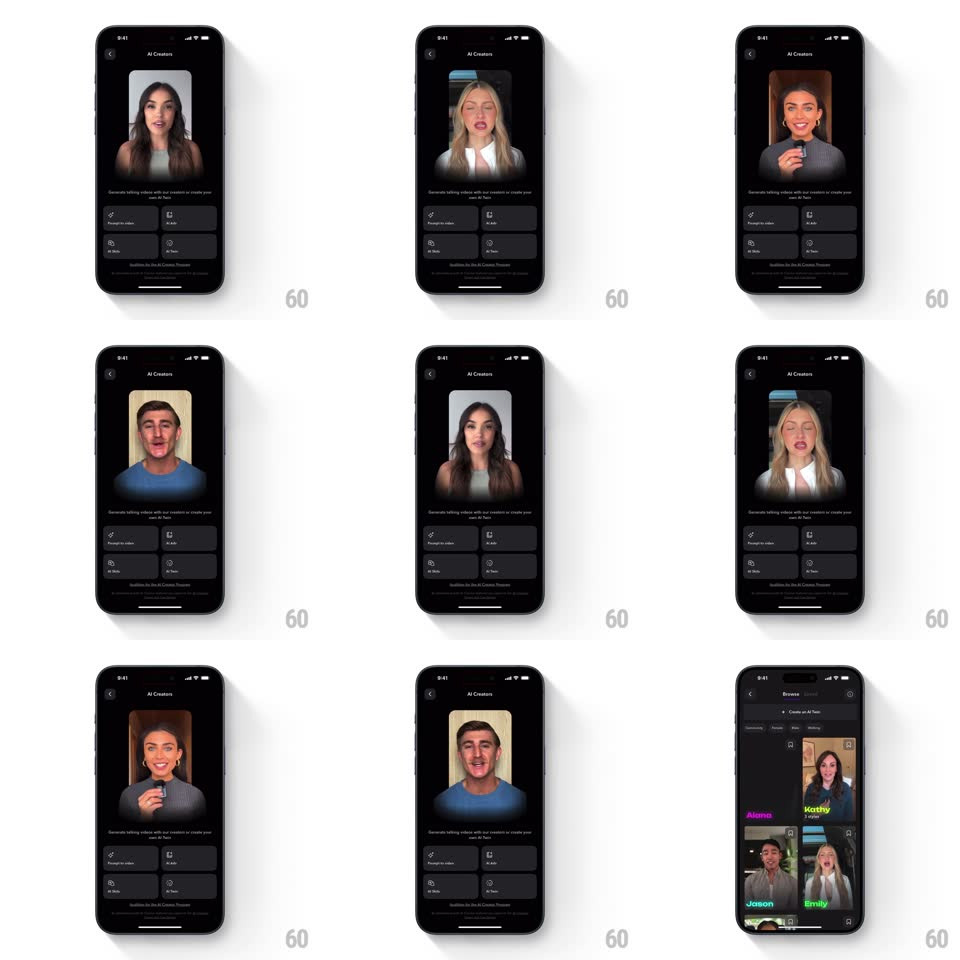

Media
Frame-by-frame

Rebuild this interaction 1:1: the Captions AI Creators intro - a single talking-head creator card auto-crossfades through creators every few seconds over four action buttons, and tapping moves into a browsable grid of named creators (Alexis, Kathy, Jason, Emily) with colored labels.

Rebuild this interaction 1:1: the Captions AI Creators intro - a single talking-head creator card auto-crossfades through creators every few seconds over four action buttons, and tapping moves into a browsable grid of named creators (Alexis, Kathy, Jason, Emily) with colored labels.
## Integration
Integration: stack-agnostic spec - springs given as stiffness/damping, timed motions as duration + curve; map every value to your framework and animation library of choice.
## Scene
Dark "AI Creators" screen: one large rounded creator video card, a subtitle line ("Generate talking videos with our creators or create your own AI Twin"), and a 2x2 grid of dark action buttons (Captions video, AI Edit, AI Ads, AI Twin). The browse view is a two-column grid of creator tiles with bright colored name labels.
## Motion spec
Pattern: auto-shuffle intro with tap-to-browse transition.
- Auto-shuffle: every ~2.5s the current creator card crossfades to the next (600ms dissolve); the incoming face scales 1.04 -> 1 as it fades in, a subtle zoom-settle.
- Each creator's card keeps its own background tint behind the face; the action grid below never moves.
- Tap (or "Browse"): the intro card slides up and out (spring ~360/24, 350ms) as the browse grid slides in from below, tiles staggering 60ms.
- In the grid, creator name labels sit below each tile in saturated colors (pink, yellow, teal) - no animation, just bright type.
## Calibration
- The shuffle is a dissolve, not a slide - creators change in place.
- The crossfade must hold both faces' aspect and center - no drift between shuffles.
## Reduced motion
Creator changes fade instantly (150ms); browse transition crossfades instead of sliding.
## Don't miss
- The intro is self-running - no user input needed for the shuffle.
- Faces are real talking-head video, not static photos; the shuffle cuts between living clips.